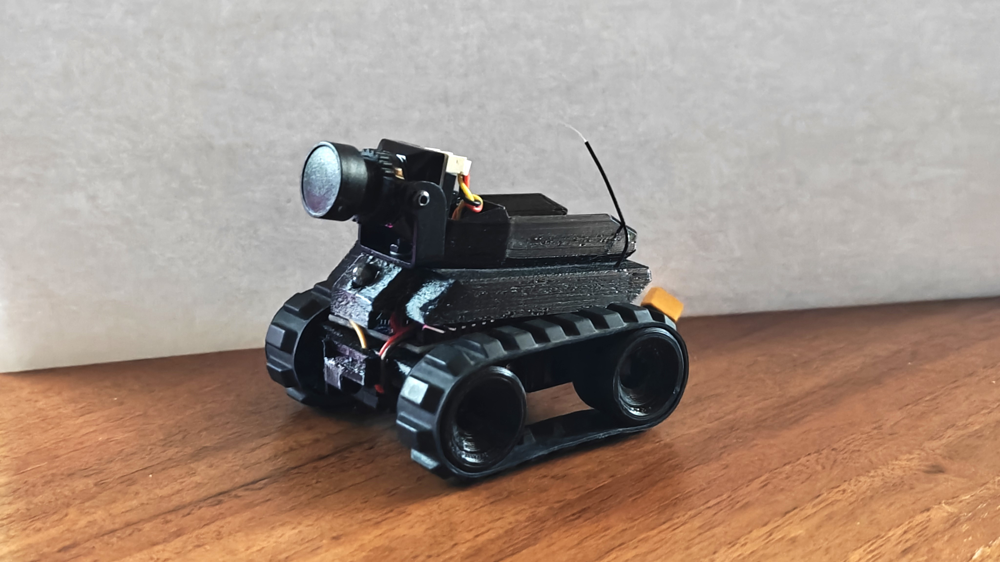

Про мене
Я студент, який вивчає фронтенд розробку. Цей сайт створено як частину лабораторної роботи.
Мої навички
-
Web Development
Базово володію HTML, CSS та JavaScript. Це дає мені можливість створювати вебсторінки, реалізовуючи їхню повну кастомізацію та логіку взаємодії.
-
Python Development
Розробив проєкт Maze Game, у якому втілено принципи ООП. Для логіки NPC реалізував алгоритм пошуку в ширину, а для процедурної генерації унікальних карт використав алгоритм пошуку в ширину (BFS).
-
Embedded Systems (Arduino)
Маю досвід програмування мікроконтролерів на C++. Реалізовував роботу з різними датчиками: від базових світлодіодів до сенсорів вологості та температури.
-
Mobile Development (Android Studio)
Створив мобільний застосунок на Java з функціональною системою переходів між вікнами. Реалізував логічний UI-дизайн, що забезпечує зручну взаємодію користувача з додатком.
Поточний проєкт
Дистанційно керований робот на гусеничному ході
Наразі я активно розробляю власного дистанційно керованого робота. Основою системи керування виступає мікроконтролер Arduino Pro Mini. Для забезпечення надійного радіозв'язку з низькою затримкою та великим радіусом дії я використовую приймач ELRS (ExpressLRS) на 2.4 ГГц. Для забезпечення ходу роботу використовуються модифіковані сервоприводи, що дозволяють обертатися на 360 градусів.
